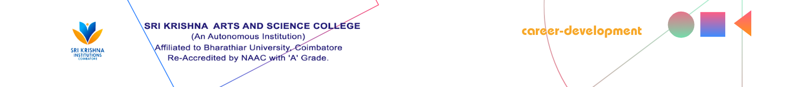

Home
Career path
Account
Pass the test with 80% to Complete the stage
Which of the following is NOT a backend programming language?
a) Python
b) Java
c) HTML
d) Ruby
What does "SQL" stand for in the context of databases?
a) Structured Query Language
b) Sequential Query Language
c) Standard Query Language
d) System Query Language
Which of the following databases is known as a NoSQL database?
a) MySQL
b) PostgreSQL
c) MongoDB
d) SQLite
What does "API" stand for in the context of web development?
a) Application Protocol Interface
b) Advanced Programming Interface
c) Application Programming Interface
d) Advanced Protocol Interface
Which of the following is used for server-side scripting in PHP?
a) <?php ?>
b) <script> </script>
c) <?script ?>
d) <?server ?>
Which of the following is NOT a type of HTTP request?
a) GET
b) POST
c) PUSH
d) DELETE
What is the purpose of a "web server" in backend development?
a) To manage databases
b) To create user interfaces
c) To handle incoming HTTP requests
d) To design website layouts
What is the purpose of a "framework" in backend development?
a) To store data
b) To create user interfaces
c) To provide a structured foundation for building applications
d) To handle server maintenance
What does "ORM" stand for in backend development?
a) Object-Relational Mapping
b) Object-Resource Model
c) Object-Request Model
d) Object-Rendering Mechanism
Which of the following is a popular backend framework for Python?
a) Ruby on Rails
b) Laravel
c) Express.js
d) Django
Which of the following is used for handling asynchronous operations in JavaScript on the backend?
a) Promises
b) Observables
c) Callbacks
d) Async/Await
Which of the following is NOT a commonly used HTTP status code?
a) 200 OK
b) 404 Not Found
c) 300 Redirect
d) 500 Internal Server Error
What is the purpose of a "session" in web development?
a) To store data on the client-side
b) To manage database connections
c) To store data temporarily on the server-side
d) To authenticate users
Which of the following is used for creating and managing RESTful APIs?
a) SOAP
b) GraphQL
c) AJAX
d) Express.js
What is the purpose of "caching" in web development?
a) To prevent unauthorized access
b) To improve performance by storing and reusing data
c) To secure database connections
d) To generate dynamic content